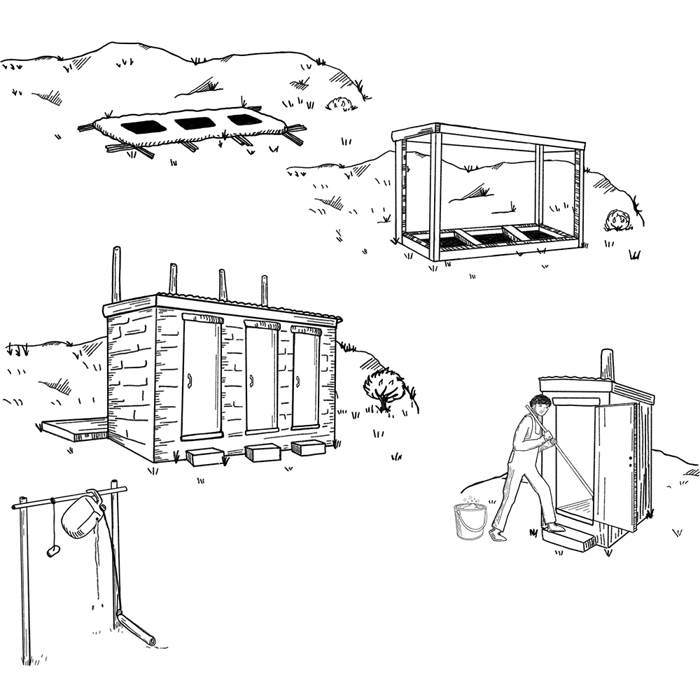

Overview
- Many diseases (including diarrhoea , cholera , typhoid , and hepatitis E and A ) spread to others when faeces contaminate water, hands, food or flies and enter another person’s mouth. This form of transmission is called “faecal-oral”.
- Using a latrine and disposing of faeces properly can save many lives during an epidemic.
Why build latrines?
- When everyone uses latrines, the environment is clean. It is more difficult for germs in faeces to spread to another person and make them sick.
- Latrines help to keep water sources free from germs. Flies cannot easily land on faeces and transfer germs to food.
- Using latrines can prevent gastrointestinal diseases.
- It is important to put the faeces of children and babies in the latrine too. Their faeces contain just as many germs!
- In an epidemic, building latrines and encouraging the community to use them is an important part of preventing the spread of disease.
Many types of latrines, such as pit latrines, can be built easily with local materials.
The type of latrine you build will depend on:
- The preferences of the community.
- The soil type and how close the water in the ground is to the surface (the water table).
- How much space the community has.
- The location of water sources.
- The number of people who will use the latrine(s).
Ask the WASH focal point or your volunteer supervisor for information on how to build latrines.
Building latrines in places where doing so is difficult
- Urban areas may have little space to build latrines. It is hard to dig latrines where the ground is hard and rocky; where the soil is thin; where the soil is unstable; or where the water level is very high (just below the surface), for example after floods.
- In these situations, you still have options. Involve members of the community in finding a solution that will work for them.
- You might consider the following options: to build raised latrines (that use large tanks or other containers to hold the faeces); to use plastic bags; to build small (family sized) container latrines; to build raised composting latrines; to employ other forms of emergency toilet.
Important things to remember about latrines
- It is very important to wash hands after going to the toilet to prevent the spread of disease. All latrines should have a place to wash hands close by, that works, and has water and soap available.
- Provide locally appropriate anal cleansing material (to wipe or wash after going to the toilet).
- If using a trench latrine, you may need to provide soil to cover the faeces.
- Make sure women and girls feel safe to use latrines during the day and at night. Males and females should use separate latrines, Latrines should be well-lit and users should be able to lock them from the inside.
- Building latrines is the easy part. Many social and cultural issues may cause people not to use them. Find out what will motivate people to use the latrines and encourage them accordingly.
- Latrine pits and tanks fill up and need to be emptied. How quickly this happens depends on how many people use them, how big the pit or tank is, the soil type, and whether people throw rubbish or menstrual pads into the pit.

Note: Avoid dirty, poorly maintained latrines with no cover. Use covered latrine pits to control flies. Make sure to wash hands after going to the toilet.